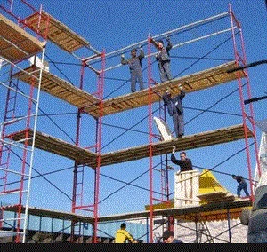

Вы можете воспользоваться калькулятором для самостоятельного расчета аренды строительных лесов. Готовый расчет можно отправить нашему менеджеру на эл.почту, либо связаться по телефону для уточнения деталей заявки.
Калькулятор стоимости аренды лесов
Строительные леса
Применяются при проведении малярных, штукатурных и других видов работ снаружи и внутри зданий. Быстрота монтажа демонтажа достигается за счет флажковых замков, которые быстро и надежно фиксируют элементы конструкции.
Стоимость аренды лесов в зависимости от площади и периода.
| от 5 д. | от 8 д. | от 15 д. | от 30 д. | от 60 д. | более 90 д. | |
|---|---|---|---|---|---|---|
| от 6 м2 | 28,00 | 15,00 | 10,50 | 9,90 | 8,90 | 7,90 |
| от 60 м2 | 20,00 | 12,00 | 8,00 | 6,90 | 6,20 | 5,50 |
| от 108 м2 | 14,00 | 7,50 | 6,50 | 5,90 | 5,30 | 4,70 |
| от 210 м2 | 6,50 | 5,75 | 5,50 | 4,90 | 4,40 | |
| от 408 м2 | 5,55 | 5,00 | 4,50 | 4,00 | ||
| от 810 м2 | 4,80 | 4,30 | 3,80 | |||
| более 1608 м2 | 4,50 | 4,00 | 3,60 |
Пример расчета: 400 м2 * 5.5 руб. * 30 дней
= 66 000,00 руб.
Пример расчета: 1600 м2 * 4.3 руб. * 60 дней
= 412 800,00 руб.
* Цена аренды в таблице указана без "Трапов", стоимость аренды одного трапа составляет 200 рублей/месяц.
* Аренда производится БЕЗ ЗАЛОГА по договору Поручительства.
* При аренды лесов комплектами цена выше на 30%.
Калькулятор стоимости аренды лесов
Леса ЛРСП - 200
Леса ЛРСП-200 представляют собой леса рамные строительные приставные (диаметр трубы 42 мм), предназначенные для отделочных и штукатурных работ, работ по реконструкции и ремонту зданий высотой до 40,60,80 метров. Выполненные в соответствии с ГОСТ 27321-87


Стоимость аренды лесов ЛРСП-200
| Наименование | Цена (руб) |
|---|---|
| Рама с лестницей | 780 |
| Рама проходная | 720 |
| Диагональные связи | 420 |
| Горизонтальные связи | 240 |
| Настил деревянный (Трап) | 750 |
| Стоимость комплекта (Без трапа) | 2160 |
| АРЕНДА комплекта (6 м2) | от 180 руб/сут |
Стоимость одной секции (с трапом) 2910 руб.